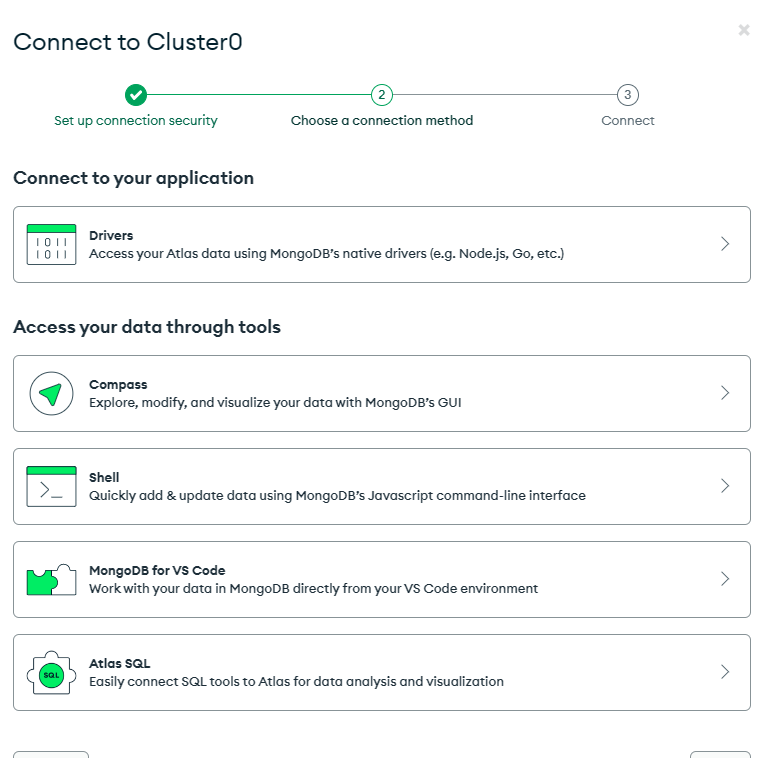
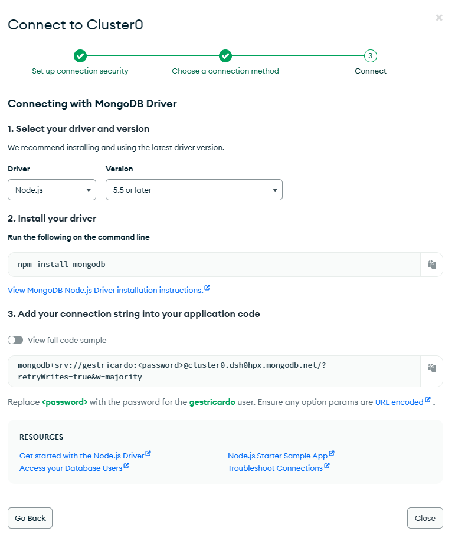

MongoDB
Para começamos a trabalohar nos models será preciso ter uma base de dados, a escolhida para
usamos será o MongoDB
Segue o tutorial
No menu lateral é so ir na opção network access.
coloqueo ip 0.0.0.0 para q possa usar em qualquer rede
Apos este procedimento sera preciso cria o cluster.
Escolha a primeira opção Drivers

